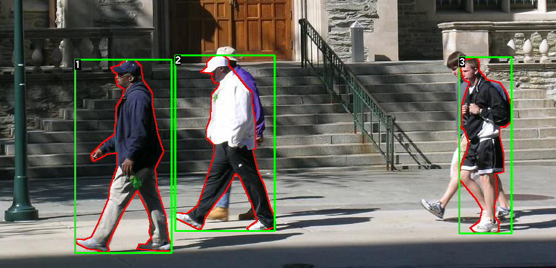
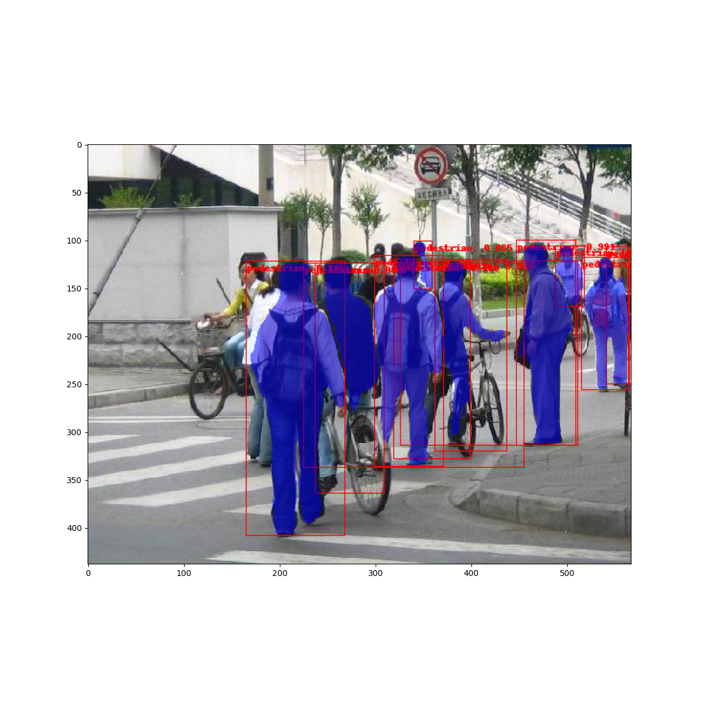

TorchVision Object Detection Finetuning Tutorial¶
Tip
To get the most of this tutorial, we suggest using this Colab Version. This will allow you to experiment with the information presented below.
For this tutorial, we will be finetuning a pre-trained Mask R-CNN model in the Penn-Fudan Database for Pedestrian Detection and Segmentation. It contains 170 images with 345 instances of pedestrians, and we will use it to illustrate how to use the new features in torchvision in order to train an instance segmentation model on a custom dataset.
Defining the Dataset¶
The reference scripts for training object detection, instance
segmentation and person keypoint detection allows for easily supporting
adding new custom datasets. The dataset should inherit from the standard
torch.utils.data.Dataset class, and implement __len__ and
__getitem__.
The only specificity that we require is that the dataset __getitem__
should return:
image: a PIL Image of size
(H, W)target: a dict containing the following fields
boxes (FloatTensor[N, 4]): the coordinates of theNbounding boxes in[x0, y0, x1, y1]format, ranging from0toWand0toHlabels (Int64Tensor[N]): the label for each bounding box.0represents always the background class.image_id (Int64Tensor[1]): an image identifier. It should be unique between all the images in the dataset, and is used during evaluationarea (Tensor[N]): The area of the bounding box. This is used during evaluation with the COCO metric, to separate the metric scores between small, medium and large boxes.iscrowd (UInt8Tensor[N]): instances with iscrowd=True will be ignored during evaluation.(optionally)
masks (UInt8Tensor[N, H, W]): The segmentation masks for each one of the objects(optionally)
keypoints (FloatTensor[N, K, 3]): For each one of the N objects, it contains the K keypoints in[x, y, visibility]format, defining the object. visibility=0 means that the keypoint is not visible. Note that for data augmentation, the notion of flipping a keypoint is dependent on the data representation, and you should probably adaptreferences/detection/transforms.pyfor your new keypoint representation
If your model returns the above methods, they will make it work for both
training and evaluation, and will use the evaluation scripts from
pycocotools which can be installed with pip install pycocotools.
Note
For Windows, please install pycocotools from gautamchitnis with command
pip install git+https://github.com/gautamchitnis/cocoapi.git@cocodataset-master#subdirectory=PythonAPI
One note on the labels. The model considers class 0 as background. If your dataset does not contain the background class, you should not have 0 in your labels. For example, assuming you have just two classes, cat and dog, you can define 1 (not 0) to represent cats and 2 to represent dogs. So, for instance, if one of the images has both classes, your labels tensor should look like [1,2].
Additionally, if you want to use aspect ratio grouping during training
(so that each batch only contains images with similar aspect ratios),
then it is recommended to also implement a get_height_and_width
method, which returns the height and the width of the image. If this
method is not provided, we query all elements of the dataset via
__getitem__ , which loads the image in memory and is slower than if
a custom method is provided.
Writing a custom dataset for PennFudan¶
Let’s write a dataset for the PennFudan dataset. After downloading and extracting the zip file, we have the following folder structure:
PennFudanPed/
PedMasks/
FudanPed00001_mask.png
FudanPed00002_mask.png
FudanPed00003_mask.png
FudanPed00004_mask.png
...
PNGImages/
FudanPed00001.png
FudanPed00002.png
FudanPed00003.png
FudanPed00004.png
Here is one example of a pair of images and segmentation masks
So each image has a corresponding
segmentation mask, where each color correspond to a different instance.
Let’s write a torch.utils.data.Dataset class for this dataset.
import os
import numpy as np
import torch
from PIL import Image
class PennFudanDataset(torch.utils.data.Dataset):
def __init__(self, root, transforms):
self.root = root
self.transforms = transforms
# load all image files, sorting them to
# ensure that they are aligned
self.imgs = list(sorted(os.listdir(os.path.join(root, "PNGImages"))))
self.masks = list(sorted(os.listdir(os.path.join(root, "PedMasks"))))
def __getitem__(self, idx):
# load images and masks
img_path = os.path.join(self.root, "PNGImages", self.imgs[idx])
mask_path = os.path.join(self.root, "PedMasks", self.masks[idx])
img = Image.open(img_path).convert("RGB")
# note that we haven't converted the mask to RGB,
# because each color corresponds to a different instance
# with 0 being background
mask = Image.open(mask_path)
# convert the PIL Image into a numpy array
mask = np.array(mask)
# instances are encoded as different colors
obj_ids = np.unique(mask)
# first id is the background, so remove it
obj_ids = obj_ids[1:]
# split the color-encoded mask into a set
# of binary masks
masks = mask == obj_ids[:, None, None]
# get bounding box coordinates for each mask
num_objs = len(obj_ids)
boxes = []
for i in range(num_objs):
pos = np.where(masks[i])
xmin = np.min(pos[1])
xmax = np.max(pos[1])
ymin = np.min(pos[0])
ymax = np.max(pos[0])
boxes.append([xmin, ymin, xmax, ymax])
# convert everything into a torch.Tensor
boxes = torch.as_tensor(boxes, dtype=torch.float32)
# there is only one class
labels = torch.ones((num_objs,), dtype=torch.int64)
masks = torch.as_tensor(masks, dtype=torch.uint8)
image_id = torch.tensor([idx])
area = (boxes[:, 3] - boxes[:, 1]) * (boxes[:, 2] - boxes[:, 0])
# suppose all instances are not crowd
iscrowd = torch.zeros((num_objs,), dtype=torch.int64)
target = {}
target["boxes"] = boxes
target["labels"] = labels
target["masks"] = masks
target["image_id"] = image_id
target["area"] = area
target["iscrowd"] = iscrowd
if self.transforms is not None:
img, target = self.transforms(img, target)
return img, target
def __len__(self):
return len(self.imgs)
That’s all for the dataset. Now let’s define a model that can perform predictions on this dataset.
Defining your model¶
In this tutorial, we will be using Mask R-CNN, which is based on top of Faster R-CNN. Faster R-CNN is a model that predicts both bounding boxes and class scores for potential objects in the image.

Mask R-CNN adds an extra branch into Faster R-CNN, which also predicts segmentation masks for each instance.

There are two common situations where one might want to modify one of the available models in torchvision modelzoo. The first is when we want to start from a pre-trained model, and just finetune the last layer. The other is when we want to replace the backbone of the model with a different one (for faster predictions, for example).
Let’s go see how we would do one or another in the following sections.
1 - Finetuning from a pretrained model¶
Let’s suppose that you want to start from a model pre-trained on COCO and want to finetune it for your particular classes. Here is a possible way of doing it:
import torchvision
from torchvision.models.detection.faster_rcnn import FastRCNNPredictor
# load a model pre-trained on COCO
model = torchvision.models.detection.fasterrcnn_resnet50_fpn(weights="DEFAULT")
# replace the classifier with a new one, that has
# num_classes which is user-defined
num_classes = 2 # 1 class (person) + background
# get number of input features for the classifier
in_features = model.roi_heads.box_predictor.cls_score.in_features
# replace the pre-trained head with a new one
model.roi_heads.box_predictor = FastRCNNPredictor(in_features, num_classes)
2 - Modifying the model to add a different backbone¶
import torchvision
from torchvision.models.detection import FasterRCNN
from torchvision.models.detection.rpn import AnchorGenerator
# load a pre-trained model for classification and return
# only the features
backbone = torchvision.models.mobilenet_v2(weights="DEFAULT").features
# FasterRCNN needs to know the number of
# output channels in a backbone. For mobilenet_v2, it's 1280
# so we need to add it here
backbone.out_channels = 1280
# let's make the RPN generate 5 x 3 anchors per spatial
# location, with 5 different sizes and 3 different aspect
# ratios. We have a Tuple[Tuple[int]] because each feature
# map could potentially have different sizes and
# aspect ratios
anchor_generator = AnchorGenerator(sizes=((32, 64, 128, 256, 512),),
aspect_ratios=((0.5, 1.0, 2.0),))
# let's define what are the feature maps that we will
# use to perform the region of interest cropping, as well as
# the size of the crop after rescaling.
# if your backbone returns a Tensor, featmap_names is expected to
# be [0]. More generally, the backbone should return an
# OrderedDict[Tensor], and in featmap_names you can choose which
# feature maps to use.
roi_pooler = torchvision.ops.MultiScaleRoIAlign(featmap_names=['0'],
output_size=7,
sampling_ratio=2)
# put the pieces together inside a FasterRCNN model
model = FasterRCNN(backbone,
num_classes=2,
rpn_anchor_generator=anchor_generator,
box_roi_pool=roi_pooler)
An Instance segmentation model for PennFudan Dataset¶
In our case, we want to fine-tune from a pre-trained model, given that our dataset is very small, so we will be following approach number 1.
Here we want to also compute the instance segmentation masks, so we will be using Mask R-CNN:
import torchvision
from torchvision.models.detection.faster_rcnn import FastRCNNPredictor
from torchvision.models.detection.mask_rcnn import MaskRCNNPredictor
def get_model_instance_segmentation(num_classes):
# load an instance segmentation model pre-trained on COCO
model = torchvision.models.detection.maskrcnn_resnet50_fpn(weights="DEFAULT")
# get number of input features for the classifier
in_features = model.roi_heads.box_predictor.cls_score.in_features
# replace the pre-trained head with a new one
model.roi_heads.box_predictor = FastRCNNPredictor(in_features, num_classes)
# now get the number of input features for the mask classifier
in_features_mask = model.roi_heads.mask_predictor.conv5_mask.in_channels
hidden_layer = 256
# and replace the mask predictor with a new one
model.roi_heads.mask_predictor = MaskRCNNPredictor(in_features_mask,
hidden_layer,
num_classes)
return model
That’s it, this will make model be ready to be trained and evaluated
on your custom dataset.
Putting everything together¶
In references/detection/, we have a number of helper functions to
simplify training and evaluating detection models. Here, we will use
references/detection/engine.py, references/detection/utils.py
and references/detection/transforms.py. Just copy everything under
references/detection to your folder and use them here.
Let’s write some helper functions for data augmentation / transformation:
import transforms as T
def get_transform(train):
transforms = []
transforms.append(T.PILToTensor())
transforms.append(T.ConvertImageDtype(torch.float))
if train:
transforms.append(T.RandomHorizontalFlip(0.5))
return T.Compose(transforms)
Testing forward() method (Optional)¶
Before iterating over the dataset, it’s good to see what the model expects during training and inference time on sample data.
model = torchvision.models.detection.fasterrcnn_resnet50_fpn(weights="DEFAULT")
dataset = PennFudanDataset('PennFudanPed', get_transform(train=True))
data_loader = torch.utils.data.DataLoader(
dataset, batch_size=2, shuffle=True, num_workers=4,
collate_fn=utils.collate_fn)
# For Training
images,targets = next(iter(data_loader))
images = list(image for image in images)
targets = [{k: v for k, v in t.items()} for t in targets]
output = model(images,targets) # Returns losses and detections
# For inference
model.eval()
x = [torch.rand(3, 300, 400), torch.rand(3, 500, 400)]
predictions = model(x) # Returns predictions
Let’s now write the main function which performs the training and the validation:
from engine import train_one_epoch, evaluate
import utils
def main():
# train on the GPU or on the CPU, if a GPU is not available
device = torch.device('cuda') if torch.cuda.is_available() else torch.device('cpu')
# our dataset has two classes only - background and person
num_classes = 2
# use our dataset and defined transformations
dataset = PennFudanDataset('PennFudanPed', get_transform(train=True))
dataset_test = PennFudanDataset('PennFudanPed', get_transform(train=False))
# split the dataset in train and test set
indices = torch.randperm(len(dataset)).tolist()
dataset = torch.utils.data.Subset(dataset, indices[:-50])
dataset_test = torch.utils.data.Subset(dataset_test, indices[-50:])
# define training and validation data loaders
data_loader = torch.utils.data.DataLoader(
dataset, batch_size=2, shuffle=True, num_workers=4,
collate_fn=utils.collate_fn)
data_loader_test = torch.utils.data.DataLoader(
dataset_test, batch_size=1, shuffle=False, num_workers=4,
collate_fn=utils.collate_fn)
# get the model using our helper function
model = get_model_instance_segmentation(num_classes)
# move model to the right device
model.to(device)
# construct an optimizer
params = [p for p in model.parameters() if p.requires_grad]
optimizer = torch.optim.SGD(params, lr=0.005,
momentum=0.9, weight_decay=0.0005)
# and a learning rate scheduler
lr_scheduler = torch.optim.lr_scheduler.StepLR(optimizer,
step_size=3,
gamma=0.1)
# let's train it for 10 epochs
num_epochs = 10
for epoch in range(num_epochs):
# train for one epoch, printing every 10 iterations
train_one_epoch(model, optimizer, data_loader, device, epoch, print_freq=10)
# update the learning rate
lr_scheduler.step()
# evaluate on the test dataset
evaluate(model, data_loader_test, device=device)
print("That's it!")
You should get as output for the first epoch:
Epoch: [0] [ 0/60] eta: 0:01:18 lr: 0.000090 loss: 2.5213 (2.5213) loss_classifier: 0.8025 (0.8025) loss_box_reg: 0.2634 (0.2634) loss_mask: 1.4265 (1.4265) loss_objectness: 0.0190 (0.0190) loss_rpn_box_reg: 0.0099 (0.0099) time: 1.3121 data: 0.3024 max mem: 3485
Epoch: [0] [10/60] eta: 0:00:20 lr: 0.000936 loss: 1.3007 (1.5313) loss_classifier: 0.3979 (0.4719) loss_box_reg: 0.2454 (0.2272) loss_mask: 0.6089 (0.7953) loss_objectness: 0.0197 (0.0228) loss_rpn_box_reg: 0.0121 (0.0141) time: 0.4198 data: 0.0298 max mem: 5081
Epoch: [0] [20/60] eta: 0:00:15 lr: 0.001783 loss: 0.7567 (1.1056) loss_classifier: 0.2221 (0.3319) loss_box_reg: 0.2002 (0.2106) loss_mask: 0.2904 (0.5332) loss_objectness: 0.0146 (0.0176) loss_rpn_box_reg: 0.0094 (0.0123) time: 0.3293 data: 0.0035 max mem: 5081
Epoch: [0] [30/60] eta: 0:00:11 lr: 0.002629 loss: 0.4705 (0.8935) loss_classifier: 0.0991 (0.2517) loss_box_reg: 0.1578 (0.1957) loss_mask: 0.1970 (0.4204) loss_objectness: 0.0061 (0.0140) loss_rpn_box_reg: 0.0075 (0.0118) time: 0.3403 data: 0.0044 max mem: 5081
Epoch: [0] [40/60] eta: 0:00:07 lr: 0.003476 loss: 0.3901 (0.7568) loss_classifier: 0.0648 (0.2022) loss_box_reg: 0.1207 (0.1736) loss_mask: 0.1705 (0.3585) loss_objectness: 0.0018 (0.0113) loss_rpn_box_reg: 0.0075 (0.0112) time: 0.3407 data: 0.0044 max mem: 5081
Epoch: [0] [50/60] eta: 0:00:03 lr: 0.004323 loss: 0.3237 (0.6703) loss_classifier: 0.0474 (0.1731) loss_box_reg: 0.1109 (0.1561) loss_mask: 0.1658 (0.3201) loss_objectness: 0.0015 (0.0093) loss_rpn_box_reg: 0.0093 (0.0116) time: 0.3379 data: 0.0043 max mem: 5081
Epoch: [0] [59/60] eta: 0:00:00 lr: 0.005000 loss: 0.2540 (0.6082) loss_classifier: 0.0309 (0.1526) loss_box_reg: 0.0463 (0.1405) loss_mask: 0.1568 (0.2945) loss_objectness: 0.0012 (0.0083) loss_rpn_box_reg: 0.0093 (0.0123) time: 0.3489 data: 0.0042 max mem: 5081
Epoch: [0] Total time: 0:00:21 (0.3570 s / it)
creating index...
index created!
Test: [ 0/50] eta: 0:00:19 model_time: 0.2152 (0.2152) evaluator_time: 0.0133 (0.0133) time: 0.4000 data: 0.1701 max mem: 5081
Test: [49/50] eta: 0:00:00 model_time: 0.0628 (0.0687) evaluator_time: 0.0039 (0.0064) time: 0.0735 data: 0.0022 max mem: 5081
Test: Total time: 0:00:04 (0.0828 s / it)
Averaged stats: model_time: 0.0628 (0.0687) evaluator_time: 0.0039 (0.0064)
Accumulating evaluation results...
DONE (t=0.01s).
Accumulating evaluation results...
DONE (t=0.01s).
IoU metric: bbox
Average Precision (AP) @[ IoU=0.50:0.95 | area= all | maxDets=100 ] = 0.606
Average Precision (AP) @[ IoU=0.50 | area= all | maxDets=100 ] = 0.984
Average Precision (AP) @[ IoU=0.75 | area= all | maxDets=100 ] = 0.780
Average Precision (AP) @[ IoU=0.50:0.95 | area= small | maxDets=100 ] = 0.313
Average Precision (AP) @[ IoU=0.50:0.95 | area=medium | maxDets=100 ] = 0.582
Average Precision (AP) @[ IoU=0.50:0.95 | area= large | maxDets=100 ] = 0.612
Average Recall (AR) @[ IoU=0.50:0.95 | area= all | maxDets= 1 ] = 0.270
Average Recall (AR) @[ IoU=0.50:0.95 | area= all | maxDets= 10 ] = 0.672
Average Recall (AR) @[ IoU=0.50:0.95 | area= all | maxDets=100 ] = 0.672
Average Recall (AR) @[ IoU=0.50:0.95 | area= small | maxDets=100 ] = 0.650
Average Recall (AR) @[ IoU=0.50:0.95 | area=medium | maxDets=100 ] = 0.755
Average Recall (AR) @[ IoU=0.50:0.95 | area= large | maxDets=100 ] = 0.664
IoU metric: segm
Average Precision (AP) @[ IoU=0.50:0.95 | area= all | maxDets=100 ] = 0.704
Average Precision (AP) @[ IoU=0.50 | area= all | maxDets=100 ] = 0.979
Average Precision (AP) @[ IoU=0.75 | area= all | maxDets=100 ] = 0.871
Average Precision (AP) @[ IoU=0.50:0.95 | area= small | maxDets=100 ] = 0.325
Average Precision (AP) @[ IoU=0.50:0.95 | area=medium | maxDets=100 ] = 0.488
Average Precision (AP) @[ IoU=0.50:0.95 | area= large | maxDets=100 ] = 0.727
Average Recall (AR) @[ IoU=0.50:0.95 | area= all | maxDets= 1 ] = 0.316
Average Recall (AR) @[ IoU=0.50:0.95 | area= all | maxDets= 10 ] = 0.748
Average Recall (AR) @[ IoU=0.50:0.95 | area= all | maxDets=100 ] = 0.749
Average Recall (AR) @[ IoU=0.50:0.95 | area= small | maxDets=100 ] = 0.650
Average Recall (AR) @[ IoU=0.50:0.95 | area=medium | maxDets=100 ] = 0.673
Average Recall (AR) @[ IoU=0.50:0.95 | area= large | maxDets=100 ] = 0.758
So after one epoch of training, we obtain a COCO-style mAP of 60.6, and a mask mAP of 70.4.
After training for 10 epochs, I got the following metrics
IoU metric: bbox
Average Precision (AP) @[ IoU=0.50:0.95 | area= all | maxDets=100 ] = 0.799
Average Precision (AP) @[ IoU=0.50 | area= all | maxDets=100 ] = 0.969
Average Precision (AP) @[ IoU=0.75 | area= all | maxDets=100 ] = 0.935
Average Precision (AP) @[ IoU=0.50:0.95 | area= small | maxDets=100 ] = 0.349
Average Precision (AP) @[ IoU=0.50:0.95 | area=medium | maxDets=100 ] = 0.592
Average Precision (AP) @[ IoU=0.50:0.95 | area= large | maxDets=100 ] = 0.831
Average Recall (AR) @[ IoU=0.50:0.95 | area= all | maxDets= 1 ] = 0.324
Average Recall (AR) @[ IoU=0.50:0.95 | area= all | maxDets= 10 ] = 0.844
Average Recall (AR) @[ IoU=0.50:0.95 | area= all | maxDets=100 ] = 0.844
Average Recall (AR) @[ IoU=0.50:0.95 | area= small | maxDets=100 ] = 0.400
Average Recall (AR) @[ IoU=0.50:0.95 | area=medium | maxDets=100 ] = 0.777
Average Recall (AR) @[ IoU=0.50:0.95 | area= large | maxDets=100 ] = 0.870
IoU metric: segm
Average Precision (AP) @[ IoU=0.50:0.95 | area= all | maxDets=100 ] = 0.761
Average Precision (AP) @[ IoU=0.50 | area= all | maxDets=100 ] = 0.969
Average Precision (AP) @[ IoU=0.75 | area= all | maxDets=100 ] = 0.919
Average Precision (AP) @[ IoU=0.50:0.95 | area= small | maxDets=100 ] = 0.341
Average Precision (AP) @[ IoU=0.50:0.95 | area=medium | maxDets=100 ] = 0.464
Average Precision (AP) @[ IoU=0.50:0.95 | area= large | maxDets=100 ] = 0.788
Average Recall (AR) @[ IoU=0.50:0.95 | area= all | maxDets= 1 ] = 0.303
Average Recall (AR) @[ IoU=0.50:0.95 | area= all | maxDets= 10 ] = 0.799
Average Recall (AR) @[ IoU=0.50:0.95 | area= all | maxDets=100 ] = 0.799
Average Recall (AR) @[ IoU=0.50:0.95 | area= small | maxDets=100 ] = 0.400
Average Recall (AR) @[ IoU=0.50:0.95 | area=medium | maxDets=100 ] = 0.769
Average Recall (AR) @[ IoU=0.50:0.95 | area= large | maxDets=100 ] = 0.818
But what do the predictions look like? Let’s take one image in the dataset and verify

The trained model predicts 9 instances of person in this image, let’s see a couple of them:
The results look pretty good!
Wrapping up¶
In this tutorial, you have learned how to create your own training
pipeline for instance segmentation models, on a custom dataset. For
that, you wrote a torch.utils.data.Dataset class that returns the
images and the ground truth boxes and segmentation masks. You also
leveraged a Mask R-CNN model pre-trained on COCO train2017 in order to
perform transfer learning on this new dataset.
For a more complete example, which includes multi-machine / multi-gpu
training, check references/detection/train.py, which is present in
the torchvision repo.
You can download a full source file for this tutorial here.